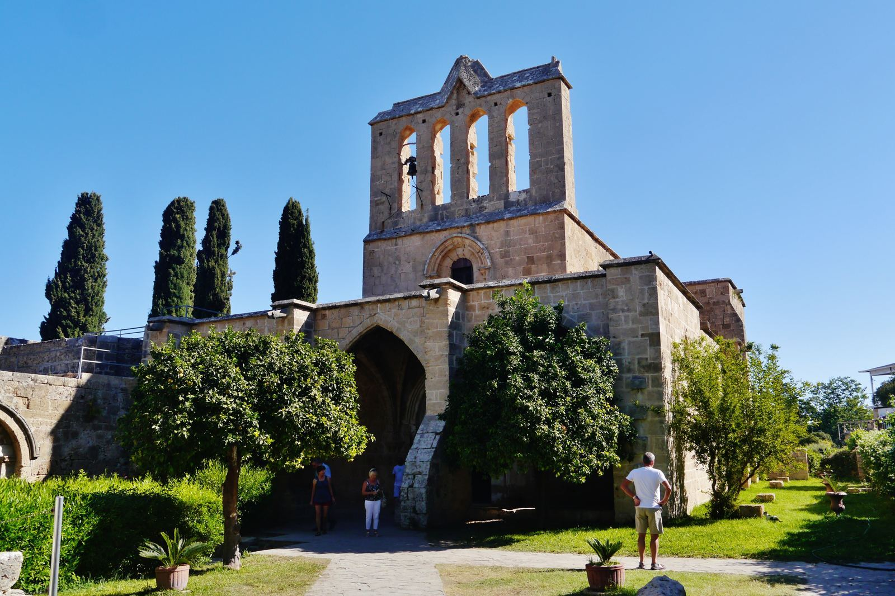
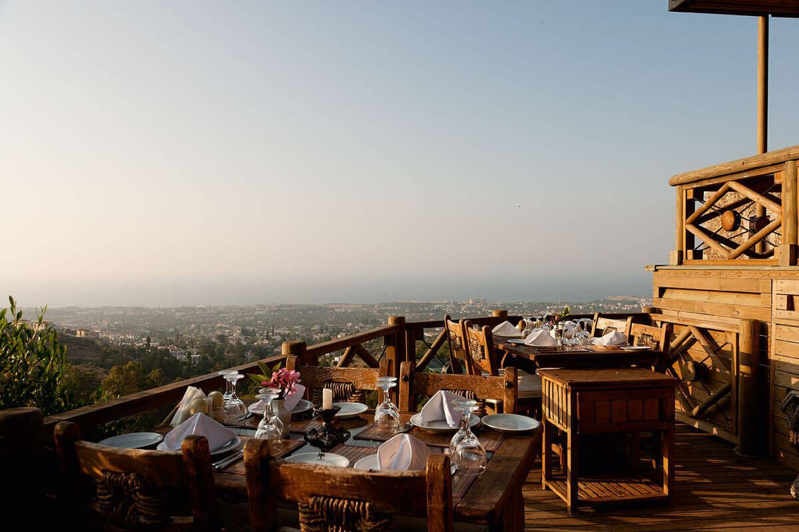
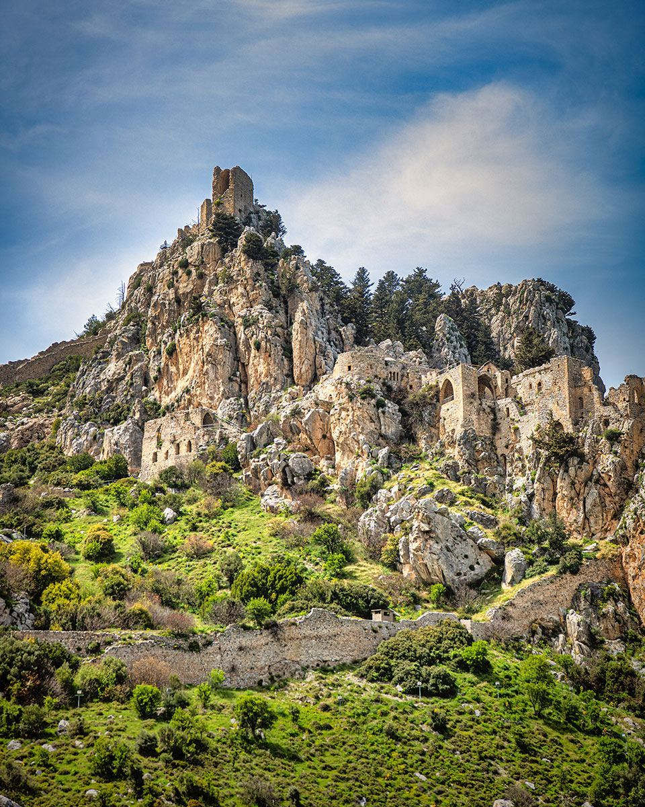
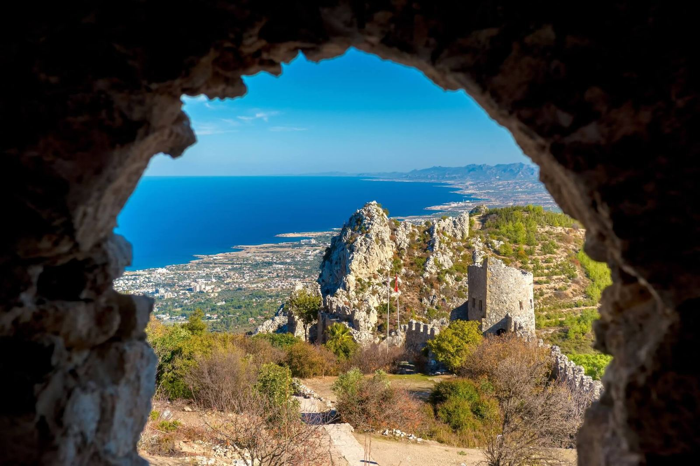
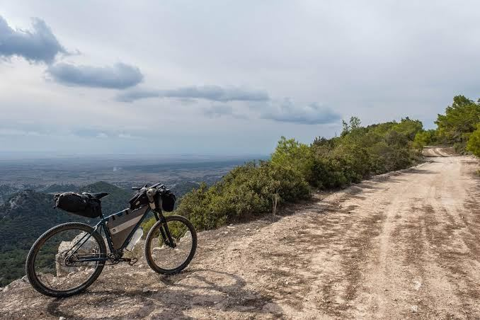

St. Hilarion's turrets and crumbling towers are rumoured to have inspired Walt Disney's castle in Snow White and the Seven Dwarfs. Down in the village, Bellapais was made famous by British writer Lawrence Durrell, who lived there in the 1950s and wrote about it in his memoir Bitter Lemons of Cyprus.
Interactive Route Timeline
Use this embedded map to get a quick sense of the route before you set off, then follow the stops in order below.
Stops
Follow the timeline in order, but keep the route flexible depending on time, weather and opening hours.
Bellapais takes its name from the Abbaye de la Paix ("Abbey of Peace"). The village's central landmark, the so-called Tree of Idleness, is where locals traditionally gathered to sit and do nothing — Lawrence Durrell wrote fondly about this custom in Bitter Lemons of Cyprus.
🚶♂️ 2 mins walk (200m) to the Abbey

Bellapais Abbey
The abbey sits on a natural terrace in the Five Finger Mountains, giving the stop both history and a strong view toward the coast.
Bellapais Abbey was built in the 13th century by Augustinian canons under the Lusignan kings, making it one of the finest examples of Gothic architecture on the island. Its cloisters and refectory are still used for concerts and cultural events in summer.
🚶♂️ 2 mins walk (100m) to viewpoint

Bellapais Viewpoint Cafés
Pause near the village viewpoint area for a drink or snack. This makes the route feel less rushed and offers great vistas.
These terrace cafés sit right on the edge of the village, giving unobstructed views down toward Kyrenia and the coastline — a favourite stop for both Durrell's generation of expatriate writers and today's visitors.
🚗 25 mins drive (15 km) winding mountain road

St. Hilarion Castle Lower Area
Arrive at the castle and begin with the lower sections. The ruins already feel dramatic right from the first levels.
St. Hilarion's original structure was a Byzantine monastery built in the 10th century around the tomb of the hermit monk Hilarion. It was later expanded into a full military fortress by the Lusignans, one of three castles (with Buffavento and Kantara) that once formed a signal chain across the Kyrenia mountains.
🚶♂️ 20 mins hike up steep stone steps
📸 Best Photo Spot

St. Hilarion Upper Viewpoint
The climb becomes the reward. From the higher points, the route turns into a sweeping panoramic view experience over Kyrenia.
The uppermost section, known as Prince John's Tower, sits at the castle's highest point. Local legend holds that its jagged silhouette inspired Walt Disney's castle in Snow White, though the connection has never been officially confirmed.
🚗 15 mins drive (10 km) back towards coast

Kyrenia Mountain Road Photo Stop
Finish with a safe roadside viewpoint on the way back. It gives the route a clean ending and another chance for landscape photos.
The road between Bellapais and Kyrenia winds through the Beşparmak ("Five Finger") mountain range, named for its distinctive jagged peaks, which locals liken to the fingers of a hand reaching into the sky.
Practical info
Wear shoes with grip because castle steps can be uneven.
Bring water, especially in summer.
Driving is recommended between Bellapais and St. Hilarion.
Check opening times before going, especially outside peak season.
Insider tip
Wear comfortable shoes for Bellapais Abbey. The uneven stone paths and staircases are part of the site's historic charm, and exploring the upper terraces rewards you with some of the best panoramic views in Northern Cyprus.
🎧 Listen to the Mountain Route Tip:
Read the transcript
Planning your mountain drive? Here is the optimal sequence: Visit Bellapais village first thing in the morning. The narrow streets are beautifully quiet and completely relaxed early on. Save Saint Hilarion Castle for the later afternoon; the climbing is much cooler, and the mountain shadows make the coastal views spectacular as the light softens.